Естественный и поляризованный свет
Свет представляет собой суммарное электромагнитное излучение множества атомов. Атомы излучают световые волна независимо друг от друга, поэтому световая волна, излучаемая телом в целом, характеризуется
всевозможными равновероятными направлениям колебаний светового вектора 𝐸⃗ в плоскости, перпендикулярной направлению распространения колебаний. Свет со всевозможными равновероятными ориентациями вектора 𝐸⃗ в плоскости, перпендикулярной
направлению распространения света, называется естественным. Вектор напряжённости электрического поля 𝐸⃗ называют световым вектором потому, что при действии света на вещество основное значение
имеет электрическая составляющая электромагнитного поля волны, действующая на электроны в атомах вещества.
Свет, в котором ориентация вектора 𝐸⃗ изменяется каким либо упорядоченным образом, называется поляризованным. Если направление вектора 𝐸⃗ не меняется, мы имеем дело с плоско поляризованным светом.
Рассмотрим (рис.1) два взаимно перпендикулярных колебания напряжённости электрического поля, совершающихся вдоль осей 𝑥 и 𝑦, и отличающихся по фазе на 𝛿:
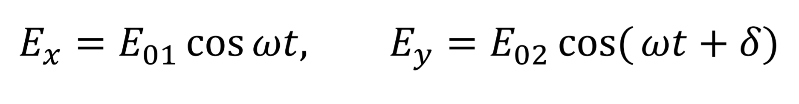
𝐸𝑥 = 𝐸01 cos 𝜔𝑡, 𝐸𝑦 = 𝐸02 cos( 𝜔𝑡 + 𝛿)
Результирующая напряжённость 𝐸⃗ является суммой напряжённостей 𝐸𝑥⃗𝑖 и 𝐸𝑦𝑗⃗ . Угол 𝜑 между направлениями векторов 𝐸⃗ и 𝐸𝑥⃗𝑖 определяется выражением
tan𝜑 = 𝐸𝑦 𝐸𝑥 = 𝐸02 cos( 𝜔𝑡 + 𝛿) 𝐸01 cos 𝜔𝑡 .
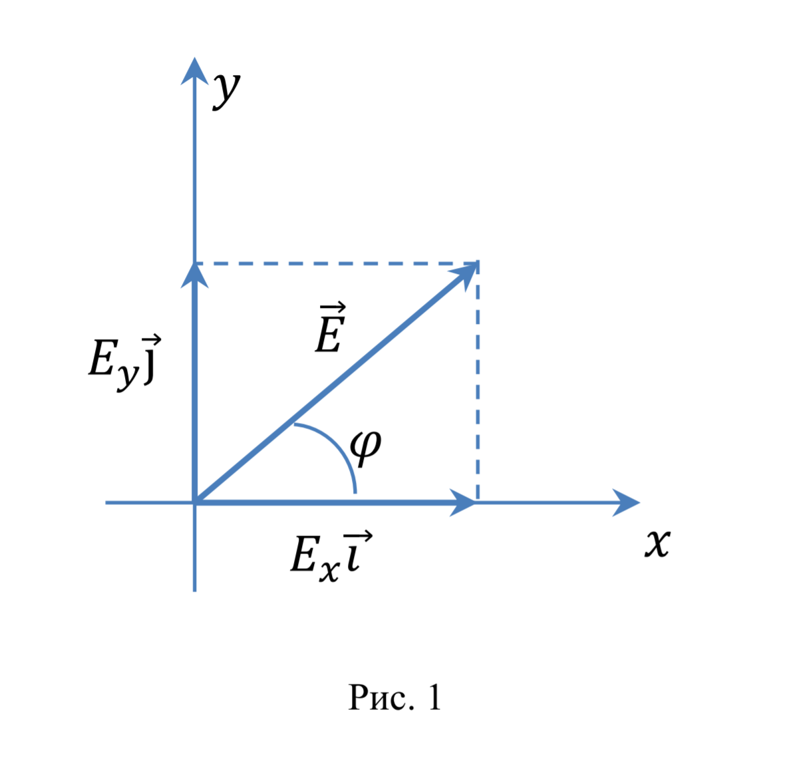
Если разность фаз 𝛿 претерпевает случайные хаотические изменения, то угол 𝜑, то есть направление результирующего светового вектора 𝐸⃗ , будет испытывать скачкообразные неупорядоченные изменения. В соответствии с этим естественный
свет можно представить как наложение двух некогерентных (разность фаз изменяется случайным образом) электромагнитных волн, поляризованных во взаимно перпендикулярных плоскостях и имеющих одинаковую интенсивность. Такое представление
намного упрощает рассмотрение прохождения естественного света через поляризационные устройства.
Допустим, что световые волны 𝐸𝑥⃗𝑖 и 𝐸𝑦𝑗⃗ когерентны, причём 𝛿 рано нулю или 𝜋, тогда
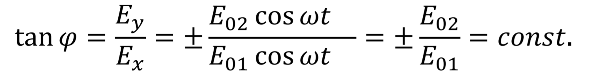
Следовательно, результирующее колебание совершатся в фиксированном направлении – волна оказывается плоско поляризованной.
В случае, когда
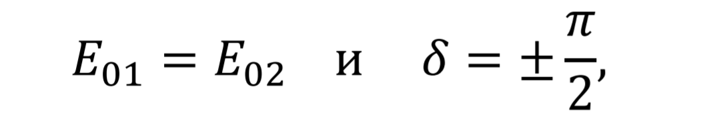
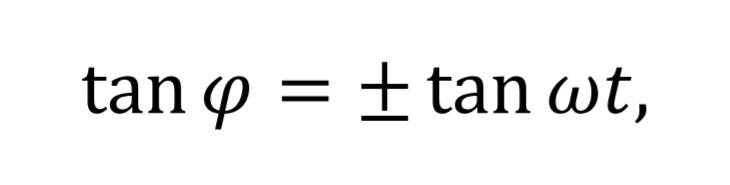
поскольку cos (𝜔𝑡 ± 𝜋/2 ) = ± sin 𝜔𝑡. Таким образом, плоскость колебаний светового вектора поворачивается вокруг направления луча с угловой скоростью, равной частоте колебаний 𝜔. Свет в этом случае будет поляризованным по кругу.
В общем случае при сложении взаимно перпендикулярных гармонических колебаний с одинаковой частотой получается движение по эллипсу. Следовательно, две когерентные плоско поляризованные световые волны, плоскости колебаний в которых взаимно
перпендикулярны, при наложении друг на друга дают эллиптически поляризованную световую волну. При разности фаз 𝛿 = ± 𝜋/2 и равенстве амплитуд получается свет, поляризованный по кругу, а при разности фаз, равной нулю или 𝜋, эллипс
вырождается в прямую и получается плоско поляризованный свет.
В зависимости от направления вращения вектора 𝐸⃗ , различают правую и левую эллиптическую и круговую поляризацию. Если направление вектора Пойтинга и направление вращения вектора напряжённости электрического поля связаны правилом
правого винта, то мы имеем дело с правой поляризацией, в противном случае – с левой.
Плоско поляризованный свет можно получить из естественного света с помощью приборов, называемых поляризаторами. Эти приборы свободно пропускают колебания, параллельные плоскости, которая называется
плоскостью поляризатора, и полностью или частично задерживают колебания, перпендикулярные этой плоскости. Поляризатор, задерживающий колебания, перпендикулярные его плоскости только частично,
называется несовершенным. На выходе из несовершенного поляризатора получается свет, в котором колебания одного направления преобладают над колебаниями других направлений. Такой свет называется частично поляризованным.
Его можно рассматривать как смесь естественного и плоско поляризованного света. Частично поляризованный свет, как и естественный, можно представить как наложение двух некогерентных плоско поляризованных
волн со взаимно перпендикулярными плоскостями колебаний. Отличие заключается в том, что в случае естественного света интенсивность этих волн одинакова, а в случае частично поляризованного – разная.
Если пропустить частично поляризованный свет через поляризатор, то при вращении прибора вокруг направления луча в плоскости, перпендикулярной лучу, интенсивность прошедшего света будет изменяться от 𝐼𝑚𝑎𝑥 до 𝐼𝑚𝑖𝑛.
Переход от одного из этих значений к другому будет совершаться при повороте на угол, равный 𝜋/2. За один полный оборот два раза будет достигаться максимальное и два раза минимальное значение интенсивности. Выражение
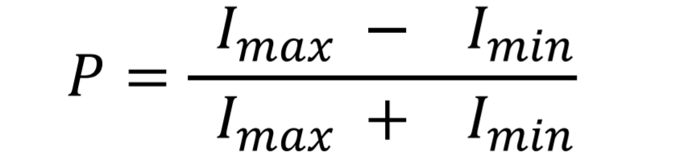
называется степенью поляризации. Для плоско поляризованного света 𝐼𝑚𝑖𝑛 = 0 и 𝑃 = 1; для естественного света 𝐼𝑚𝑎𝑥 = 𝐼𝑚𝑖𝑛 и 𝑃 = 0. Необходимо отметить, что к эллиптически поляризованному свету это понятие не применимо,
поскольку у такого света колебания полностью упорядочены.
Закон Малюса
Рассмотрим, как изменяется интенсивность прошедшего через поляризатор света при вращении поляризатора в плоскости, перпендикулярной направлению луча. Пусть на поляризатор падает плоско поляризованный свет амплитуды 𝐸0 и интенсивности
𝐼0. Поляризатор, анализирующий в какой плоскости поляризован свет, называется анализатором (рис.2).
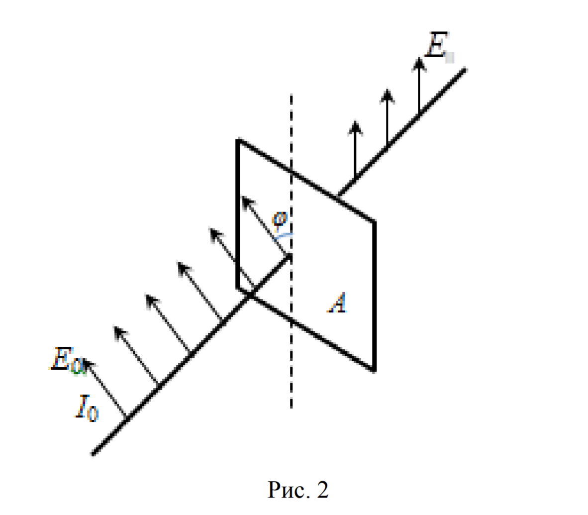
Сквозь прибор пройдёт составляющая вектора напряжённости 𝐸0 ⃗ , параллельная плоскости поляризатора. Следовательно,
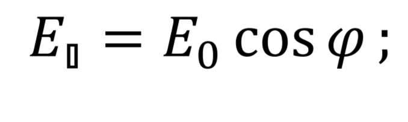
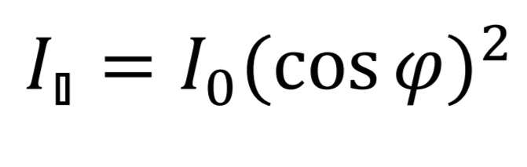
Закон Малюса: Интенсивность света, прошедшего через поляризатор, прямо пропорциональна произведению интенсивности 𝐼0 падающего на поляризатор плоско поляризованного света и квадрату косинуса угла между плоскостью колебаний вектора
напряжённости падающего света и плоскостью поляризатора.
Если на поляризатор падает естественный свет (рис.3), то интенсивность 𝐼0, вышедшего из поляризатора света, равна половине интенсивности падающего на поляризатор естественного света ( 𝐼ест). Тогда из анализатора выйдет свет, интенсивность
которого
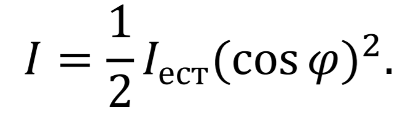
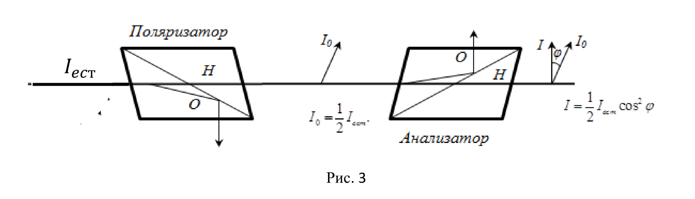
Поляризация света при двойном лучепреломлении
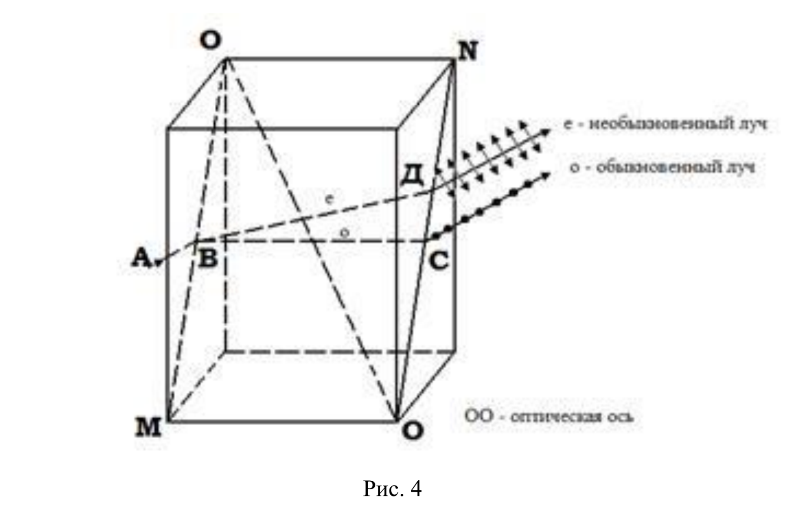
Все кристаллы, кроме кристаллов кубической симметрии, являются анизотропными, то есть свойства кристаллов зависят от направления. Явление двойного лучепреломления впервые было обнаружено Барталином
в 1667 г. на кристалле исландского шпата (разновидность СаСО3). Явление двойного лучепреломления заключается в следующем: луч света, падающий на анизотропный кристалл, разделяется в нем на два
луча: обыкновенный и не обыкновенный, распространяющиеся в общем случае с разными скоростями в различных направлениях (рис.4).
Анизотропные кристаллы подразделяются на одноосные и двуосные. У одноосных кристаллов имеются одно направление, называемое оптической осью, при распространении вдоль которого не происходит разделения
на обыкновенный и необыкновенный лучи. Любая прямая параллельная направлению оптической оси будет также являться оптической осью. Любая плоскость, проходящая через оптическую ось, называется
главным сечением или главной плоскостью кристалла. Обычно пользуются главным сечением, проходящим через световой луч.
Отличия между обыкновенными и необыкновенными лучами:
a) обыкновенный луч подчиняется законам преломления, необыкновенный нет;
b) обыкновенный луч поляризован перпендикулярно плоскости главного
сечения, у необыкновенного луча колебания вектора напряжённости электрического поля происходят в плоскости главного сечения;
c) показатель преломления обыкновенного луча 𝑛𝑜 постоянен во всех направлениях, показатель преломления
необыкновенного луча 𝑛е зависит от направления распространения света.
Различие в свойствах обыкновенного и необыкновенного лучей определяется направлением их поляризации, то есть направлением колебаний вектора 𝐸⃗ (светового вектора), поскольку скорость распространения электромагнитной волны в прозрачных
диэлектриках определяется значением диэлектрической проницаемости 𝜀 в данном направлении:
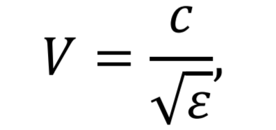
где с−скорость света в вакууме. И как следствие, показатель преломления также зависит от направления колебаний светового вектора:
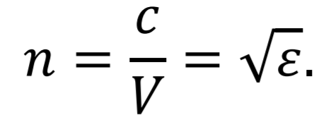
В одноосных кристаллах 𝜀 в направлении оптической оси и в направлениях, перпендикулярных к ней, имеет различные значе- 10 ния 𝜀⫾ и 𝜀⫠. В других направлениях 𝜀 имеет промежуточные значения. В обыкновенном луче колебания светового
вектора 𝐸⃗ происходят в направлении, перпендикулярном к главному сечению кристалла. Поэтому при любом направлении обыкновенного луча вектор 𝐸⃗ образует с оптической осью прямой угол и скорость распространения световой волны будет
одна и та же, равная
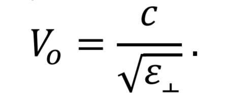
Изображая скорость обыкновенного луча в виде отрезков, отложенных по разным направлениям, мы получим сферическую поверхность. На рисунке 5 показано пересечение этой поверхности с плоскостью чертежа.
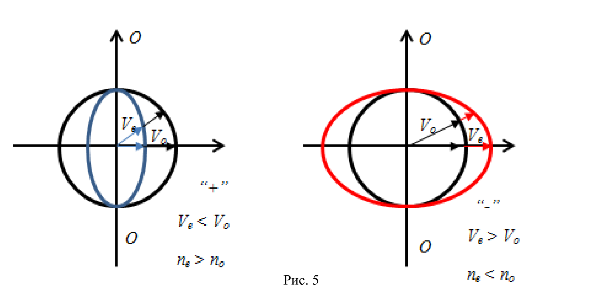
Такая картина наблюдается в любом главном сечении, то есть в любой плоскости, проходящей через оптическую ось. Представим себе, что внутри кристалла помещается точечный источник света. Тогда построенная нами сфера будет волновой поверхностью
обыкновенных лучей.
Колебания вектора 𝐸⃗ в необыкновенном луче совершаются в плоскости главного сечения. Поэтому для разных направлений лучей направления колебаний вектора 𝐸⃗ образуют с оптической Рис. 5 11 осью разные
углы. Для луча, перпендикулярного оптической оси, вектор 𝐸⃗ параллелен оптической оси и, следовательно, скорость распространения необыкновенного луча в этом направлении

Можно показать, что волновая поверхность необыкновенных лучей представляет собой эллипсоид вращения. В местах пересечения с осью кристалла этот эллипсоид и сфера, построенная для обыкновенных лучей, соприкасаются (рис.5).
Одноосные кристаллы характеризуются показателем преломления обыкновенного луча
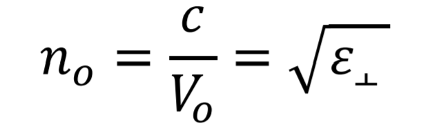
и показателем преломления необыкновенного луча, перпендикулярного к оптической оси
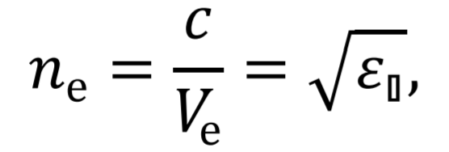
который и называют показателем преломления необыкновенного луча.
В зависимости от того, какая из скоростей 𝑉𝑜 или 𝑉е , больше, различают положительные и отрицательные одноосные кристаллы. У положительных кристаллов 𝑉𝑜 > 𝑉е (𝑛е > 𝑛о ). У отрицательных кристаллов 𝑉е > 𝑉о (𝑛о > 𝑛е ) (рис.
5).
Поляризационные устройства
Первая поляризационная призма была изобретена в 1828 году шотландским физиком Николем. Её сокращённо называют николем (рис. 6).
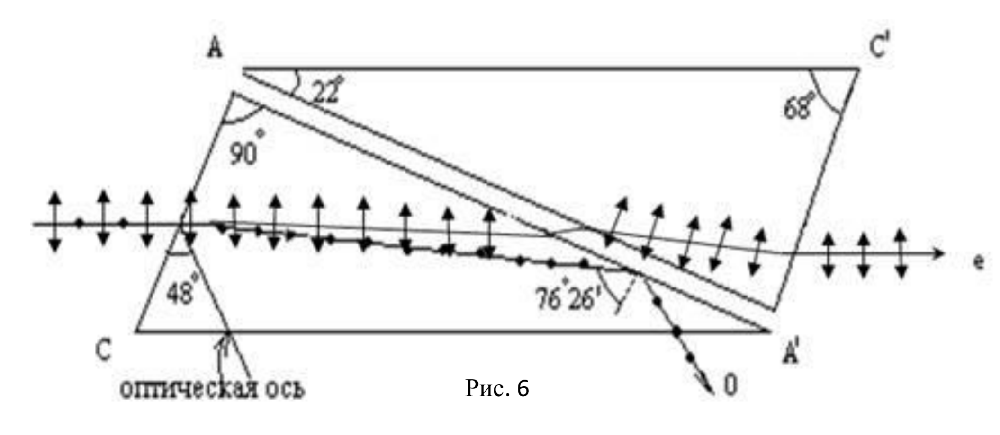
Кристалл исландского шпата, которому придана форма наклонной четырёхугольной призмы 𝐴𝐶𝐴′𝐶′ разрезают по диагональной плоскости 𝐴𝐴′ на две части, которые затем склеивают особой смолой – канадским
бальзамом. Показатель преломления 𝑛 канадского бальзама удовлетворяет соотношению 𝑛𝑒 < 𝑛 < 𝑛𝑜, где 𝑛𝑒 − показатель преломления исландского шпата для необыкновенного луча, а 𝑛0 − показатель преломления для обыкновенного
луча
Луч света, падающий параллельно ребру 𝐴𝐶′, разделяется на два луча. Для обыкновенного луча угол падения на плоскость разреза оказывается больше предельного, и он испытывает полное внутреннее отражение от слоя канадского бальзама.
Благодаря этому он не попадает во вторую призму и выходит через грань 𝐶𝐴′, где затем полностью поглощается.
Для необыкновенного луча показатель преломления канадского бальзама больше чем исландского шпата. Поэтому луч проходит слой бальзама и выходит из кристалла параллельно падающему.
Таким образом, на выходе из призмы Николя получаем плоско поляризованный свет.
В некоторых кристаллах один из лучей поглощается сильнее другого. Это явление называется дихроизмом. Очень сильным дихроизмом в видимых лучах обладает кристалл турмалина (минерал сложного состава).
В нём обыкновенный луч практически полностью поглощается на длине в 1мм. В кристаллах сульфата йодистого хинина один из лучей поглощается на пути порядка 0.1мм. Это обстоятельство используется для изготовления поляризационного
устройства, называемого поляроидом. Оно представляет собой целлулоидную плёнку, в которую введено большое количество одинаково ориентированных кристалликов сульфата йодистого хинина.
Поляризация света при отражении и преломлении
Если угол падения света на границу раздела двух диэлектриков (например, на поверхность стеклянной пластинки) отличен от нуля, отражённый и преломленный свет оказывается частично поляризованным. Это
следует из условий, налагаемых на электромагнитное поле на границе двух диэлектриков. Степень поляризации зависит от угла падения. При этом, если свет падает под углом 𝑖Бр, удовлетворяющим условию
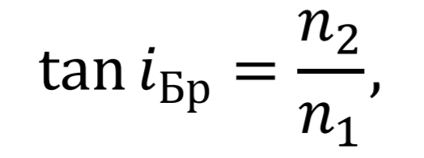
где 𝑛2 и 𝑛1 − показатели преломления второй и первой сред соответственно, отражённый луч оказывается полностью поляризованным в плоскости, перпендикулярной плоскости падения (рис.7).
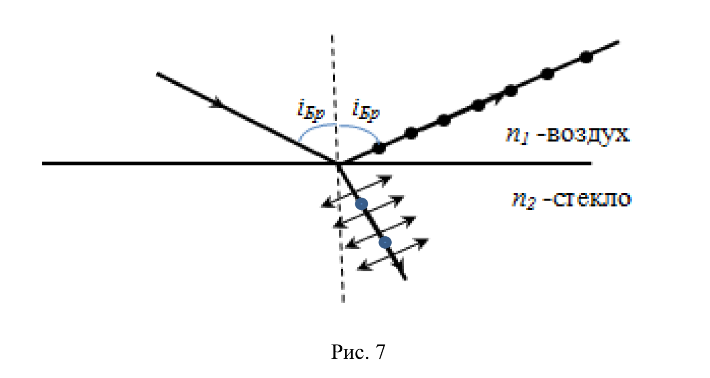
Степень поляризации преломленного луча при этом достигает наибольшего значения, однако этот луч остаётся поляризованным только частично.
Соотношение (2) носит название закона Брюстера, а угол падения света 𝑖 = 𝑖Бр называется углом Брюстера.
Степень поляризации преломленного света может быть значительно повышена многократным преломлением при условии падения света на границу раздела под углом Брюстера. Если для стекла (n =1,53) степень поляризации преломленного луча составляет
≈15 %, то после преломления на 8-10 наложенных друг на друга стекРис. 7 14 лянных пластинках (стопа Столетова), вышедший свет будет практически полностью поляризован в плоскости падения.